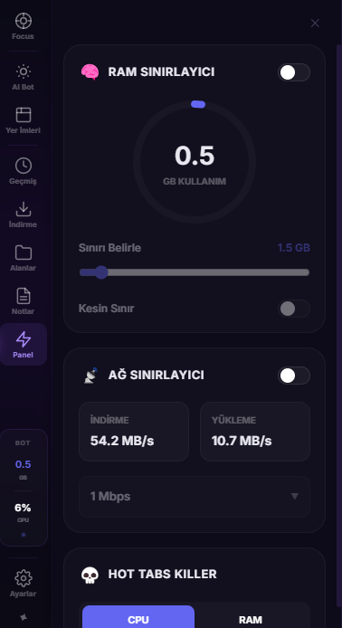
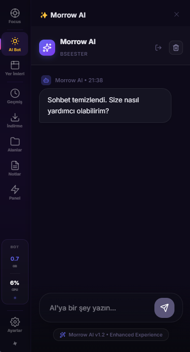

Web'i Morrow ile Gelecekten Keşfedin
Hızın estetikle buluştuğu yer. Chromium tabanlı Morrow Browser, gelişmiş kaynak yönetimi ve yerleşik yapay zekasıyla internette sörf yapma şeklinizi değiştiriyor.
Neden Morrow?
Sıradan bir tarayıcıdan çok daha fazlası.
Turbo Şarj Modu
Aktif sekmenize CPU ve GPU önceliği vererek, en ağır web uygulamalarında bile takılmasız bir deneyim sunar.
Dahili AdBlock
Reklamları ağ katmanında engeller. Daha temiz sayfalar, daha az veri tüketimi ve yüksek gizlilik.
Çalışma Alanları
İş, okul ve kişisel hayatınızı birbirinden ayırın. Her alan için bağımsız yer imleri ve geçmiş.
Kaynaklar Sizin Kontrolünüzde
Morrow Browser, RAM ve Ağ sınırlayıcıları ile sisteminizi asla yormaz. Hard RAM Limit ve Native Network Emulation ile tarayıcınızın sistem kaynaklarını ne kadar kullanacağına siz karar verin.
v1.4.0 Güncellemesi: Yerleşik Electron oturum emülasyonu ile %100 istikrarlı ağ kısıtlama özelliği eklendi.


Geleceğin Yapay Zekası Yanınızda
Morrow AI (Puter.js) entegrasyonu ile web sayfalarını özetleyebilir, sorularınızı sorabilir ve tarayıcı ayarlarınızı doğal dille yönetebilirsiniz. Login gerektirmez, tamamen ücretsiz.
Morrow'a Geçiş Yapın
Siz de modern web deneyiminin bir parçası olun.